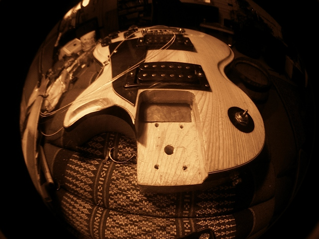

Nous avons rajouté, une page contact, pas mal d’astuces de lutherie, et quelques photos. D’autres mises à jour seront effectuées prochainement.
Tim Laser aussi a le Net !
Quelques photos …
22 avril, 2010


La cale de plomb
22 avril, 2010

Une cale de plomb de 0,5 mm donne du sustain...
Vieux support de sorcellerie sumérienne, le Plomb est le meilleur isolant acoustique et phonique. Le son ne peut pas se propager à travers le plomb. Cette qualité extraordinaire permet de découpler le corps d’un manche vissé genre strato, afin de découpler les deux corps vibrant et de doubler le sustain de chaque note. Il y a une explication scientifique à ce miracle et qui fonctionne aussi comme cale sous les bloc-cordes et les sillets. moins le son passe dans le manche, plus il reste dans la corde. Et moins le corps et le manche vibre ensemble, plus le son dure longtemps. Comprenez que la colle sur les manches collés, fait office d’isolant phonique, mais c’est en générale plutôt le poids qui, empéchant la guitare de sonner, lui transforme sa puissance en longueur de la note.
Le réglage sur mesure
22 avril, 2010
La difficulté du réglage optimal sur une guitare est paradoxale. Nous baignons dans l’objectif et le subjectif. L’objet est l’instrument en lui même, et le sujet : le musicien. En fonction de l’ajustage des 200 pièces de la guitare, le réglage objectif est différent. Mais le niveau, le sexe, ou l’humeur peut obliger à pousser certains paramètres lors d’un réglage, afin de favoriser le jeu dans tel ou tel style. Je pense tout particulièrement au filles et aux vieux guitaristes bardés de tendinites pour action très basses, faciles et rapides.
Le présent du Présent
22 avril, 2010
LE PRESENT DU PRESENT
Quand je dis que la guitare m’a sauvé la vie, ce n’est pas une image… mais une réalité. Inconsciemment, les musiciens pratiquent la méditation. Il n’est pas ici question d’une quelconque extase mystique, mais d’une descente au coeur du Présent. Ce que les samouraïs appellent « La Voie du Milieu ». Entre deux secondes, il y a quatre notes interprétables et chacune d’entre elles peut être jouée “devant”, “sur”, ou “au fond”. De plus, chacun de quatre coup possibles peut être plus ou moins accentué, donc fort ou doux. Cette diversité complexe nous oblige en tant que musicien, à aller au coeur du Temps, dans l’Instant même, le Présent.
C’est le présent du Présent…son cadeau!
Aum namas shiva
22 avril, 2010
Je me souviens très bien de cet après midi de pluies de mousson en Inde. Le vieux luthier essayait de m’expliquer qu’il était impossible pour moi d’apprendre la lutherie de sitar, puisque mon père n’était pas luthier déjà. Après lui avoir proposé de lui acheter un sitar inachevé à la condition qu’on le fasse ensemble, je filait chez le luthier d’en face afin de me procurer des outils à la commande.
Puis nous sommes partis, avec le fils du père nourrir des poissons d’or, d’ambre et de jade au lac sacré du coin…
Le chevalet de sitar et la loi des harmoniques
22 avril, 2010
Un son est composé de plusieurs notes, ou une note est composée de plusieurs sons. La plus grave s’appelle la « fondamentale ». Pour un gros MI c’est donc MI. Mais à l’intérieur de cette note MI, il y en a une audible qui est le MI à l’octave. A l’intérieur de ce Mi à l’octave existe la première quinte qui est SI. Et ainsi de suite…
Des petites notes sont cachées les unes dans les autres. C’est ce qu’on appelle en acoustique : le timbre. Ces notes dans les notes, on les nomme des harmoniques. Le chevalet de sitar, en frôlant la corde après son ancrage, déclenche des harmoniques en frisant. Le gros Mi ne perd pas en puissance, ce sont l’octave et la quinte cachée à l’intérieur du gros Mi qui sont mis en valeur…
La planif
22 avril, 2010

Malgré l’utilisation de cale à radius lors du frettage, la touche peut se creuser et les frettes s’user en perdant de la hauteur.
Le défaut est toujours le même: ca frise ! On peut refretter bien sûr, et dresser la touche, mais c’est forcément chère et risqué.
Mieux vaut donc « planifier » les frettes. C’est à dire les rendre parallèles aux cordes. Une planif réussie se fait cordes montées avec la même marque et le même tirant qui seront montés dessus. Les cordes sont descendues à un dixième jusqu’à effleurer les frettes, révélant ainsi les défauts et les trous du manche et du frettage.
Apprenti luthier s’abstenir… Entrainez vous longuement sur des épaves à vous… Penser bien à travailler par le vide : baisser à la lime les frettes qui sonnent pour libérer celle qui frise !


{kind=link}
{kind=link}
{kind=link}
{kind=link}
{kind=link}
{kind=link}